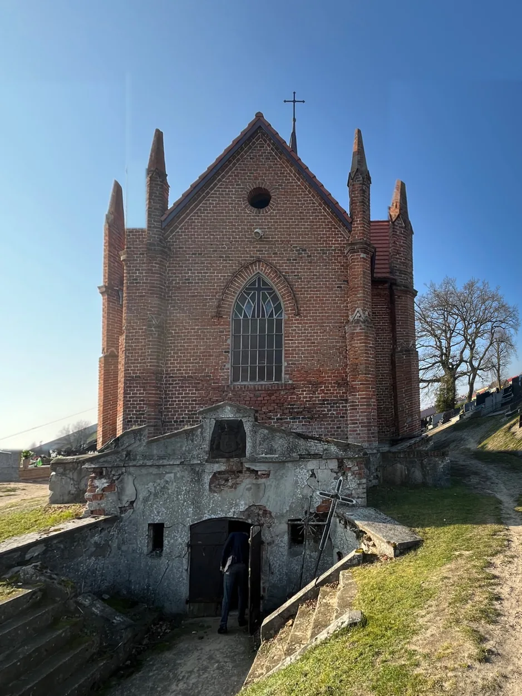
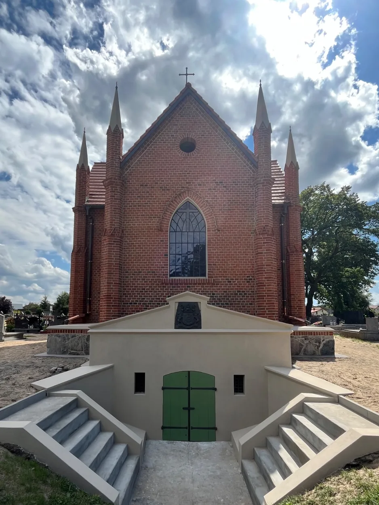
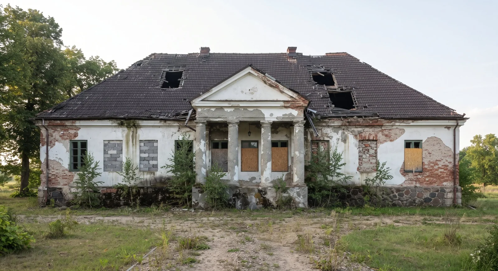
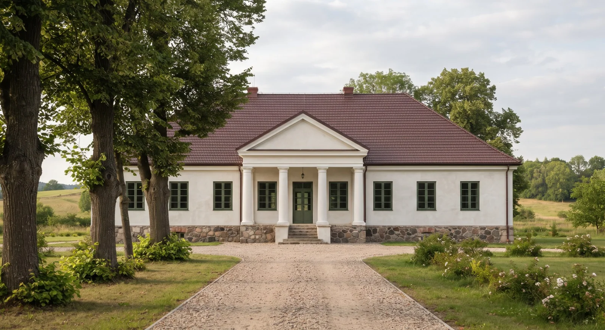
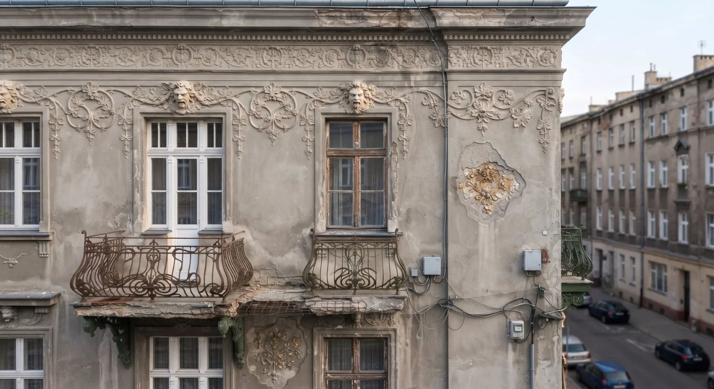
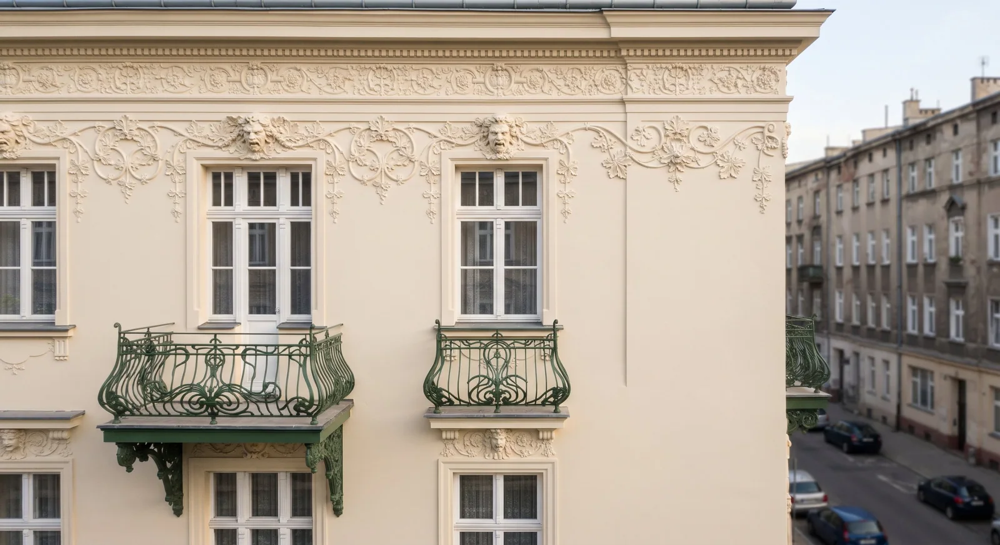
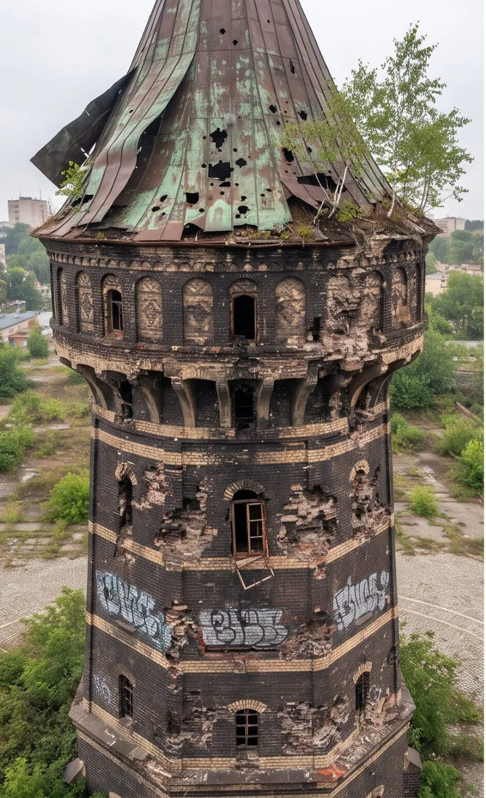
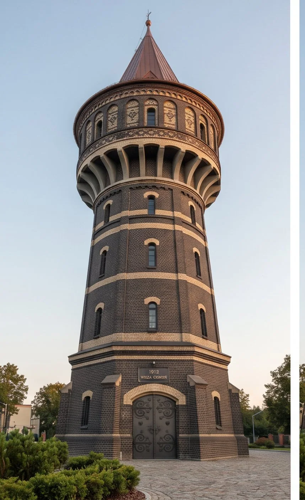
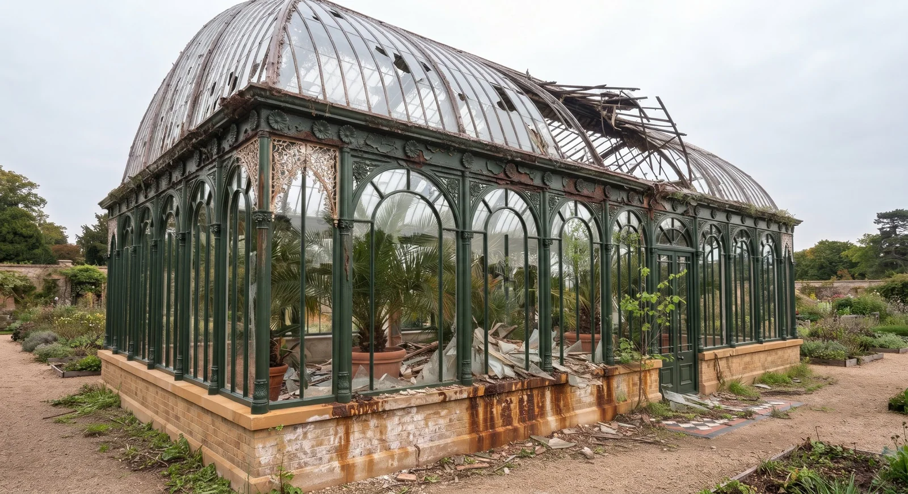
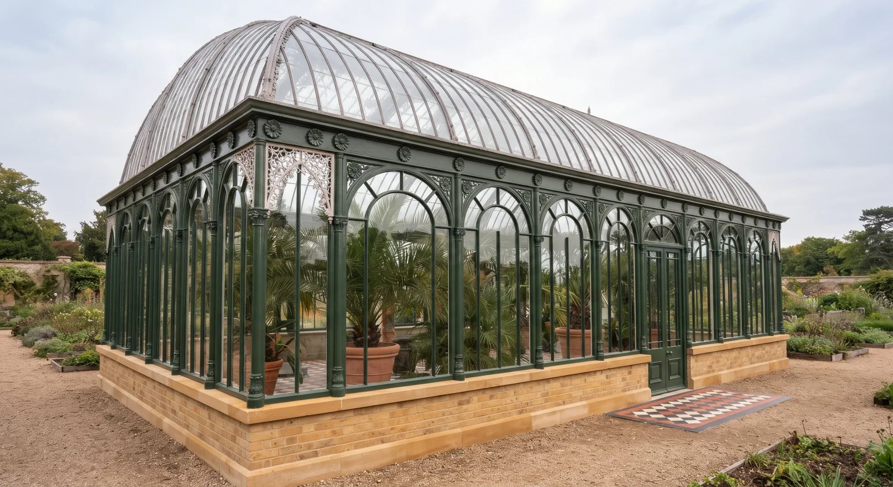

Kaplica cmentarna z kryptą w Kościelcu
Remont kaplicy wraz z kryptą, prowadzony w całości przez nas.
Obiekt powstaje
Kaplica cmentarna figuruje w Gminnej Ewidencji Zabytków jako obiekt z XIX wieku. Dokładną datę i materiał uzupełnimy z karty ewidencyjnej.
budowniczy, nieznany z nazwiskaWpis do rejestru zabytków
Numer i data decyzji. Od tego momentu każda zmiana wymaga zgody konserwatora.
konserwatorPrzetarg i umowa
Postępowanie 2024/BZP 00090607. Inwestorem jest Gmina Kościelec, nadzór sprawuje Wielkopolski Wojewódzki Konserwator Zabytków.
Cmentarz parafialny, ul. Długa
Kościelec, gm. Kościelec
pow. kolski, woj. wielkopolskie
Około 6 km na południowy zachód od Koła, 116 km na wschód od Poznania. Kaplica stoi na cmentarzu parafialnym - można podejść i obejrzeć z zewnątrz o każdej porze.
Wycinek mapy topograficznej z XIX wieku, z zaznaczonym tym samym miejscem. Wstawimy, gdy ustalimy arkusz i prawa do publikacji skanu.
Prace
Osuszenie i odsolenie muru, uzupełnienia cegłą dobraną pod wymiar i wypał, tynki wapienne, renowacja stolarki i okuć, uporządkowanie otoczenia.


PRZEDPOPrzesuń suwak, żeby porównać
Odbiór
Odebrane w terminie umownym, z poświadczeniem wystawionym przez inwestora.
| Inwestor | Gmina Kościelec |
| Tryb | Przetarg publiczny, 2024/BZP 00090607 |
| Nadzór | Wielkopolski Wojewódzki Konserwator Zabytków |
Obiekt ma przetrwać kolejne sto lat
Dokumentacja powykonawcza, zalecenia do przeglądów, kontakt na wypadek gdyby coś zaczęło się dziać.
ktoś po nasDrewniany kościół św. Michała Archanioła w Dębnie
Szalowanie ścian, gontowe pokrycie dachu i miedziana sygnaturka. Obiekt z 1766 roku.
Kościół powstaje
Drewniany kościół parafialny pod wezwaniem świętego Michała Archanioła. Konstrukcja zrębowa, szalowana deskami, dach kryty gontem.
cieśla, nieznany z nazwiskaRozbudowa
Kościół zostaje powiększony. Z tego etapu pochodzi znaczna część dzisiejszej bryły.
ówczesna parafiaWpis do rejestru zabytków
Numer decyzji to 107/692/A. Datę wpisu uzupełnimy z karty ewidencyjnej.
konserwatorUmowa z parafią
Inwestorem jest parafia, prace finansowane z Rządowego Programu Odbudowy Zabytków. Umowa podpisana 2 sierpnia 2024.
Kościół św. Michała Archanioła
Dębno Poproboszczowskie, gm. Babiak
pow. kolski, woj. wielkopolskie
Około 5 km na południe od Babiaka, 12 km na północ od Koła i 120 km na wschód od Poznania. Parafia nosi nazwę „w Dębnie Królewskim”, ale sam kościół stoi w sąsiednim Dębnie Poproboszczowskim, tuż przy zachodniej granicy wsi.
Wycinek mapy topograficznej z przełomu XIX i XX wieku, z zaznaczonym tym samym miejscem. Wstawimy, gdy ustalimy arkusz i prawa do publikacji skanu.
Prace przy drewnie
Dezynfekcja, usunięcie starych powłok, wymiana uszkodzonych elementów szalowania i impregnacja. Nowe pokrycie dachu gontem.
| Inwestor | Parafia św. Michała Archanioła w Dębnie Królewskim |
| Rejestr zabytków | nr 107/692/A |
| Pozwolenie konserwatorskie | WWKZ Delegatura w Koninie, nr 171/2024/A |
| Finansowanie | Rządowy Program Odbudowy Zabytków |
Odbiór pierwszego etapu
Pierwszy etap odebrany w terminie.
Arcada ConceptSygnaturka i zakończenie
Nowe miedziane pokrycie sygnaturki. Umowny termin zakończenia całości to 1 kwietnia 2025 - potwierdzimy odbiór końcowy.
Arcada ConceptDrewno wymaga nadzoru
Gont i szalowanie trzeba oglądać regularnie. Zostaje zestaw zaleceń i kontakt.
ktoś po nasDwór w Lipowcu Starym
Klasycystyczny dwór z około 1820 roku. Po wojnie dom kultury, potem dwadzieścia lat pustki.
wizualizacja poglądowa · obiekt fikcyjnyDwór powstaje
Mur ceglany na kamiennym cokole, tynki wapienne, portyk z czterema kolumnami, dach naczółkowy.
murarz, nieznany z nazwiskaPrzebudowa kuchni
Dobudowa ganku od strony ogrodu, przebicie nowego wejścia.
ówczesny właściciel majątkuŚwietlica
Majątek przejęty, dwór zamieniony na świetlicę. Zamurowano dwa okna, portyk otynkowano cementem.
państwoPustka
Dom kultury się wyprowadza. Dach przecieka, zaczyna się dwadzieścia lat bez gospodarza.
niktPomiar i dokumentacja
Skan laserowy całej bryły i wnętrz. Z chmury punktów powstał komplet rysunków inwentaryzacyjnych - pierwszy w historii tego dworu.
Remont konserwatorski
Osuszenie murów, zdjęcie wyprawy cementowej, tynki wapienne, odtworzenie dwóch zamurowanych okien, renowacja stolarki.


PRZEDPOPrzesuń suwak, żeby porównać
Obiekt ma przetrwać kolejne sto lat
Dokumentacja powykonawcza, zalecenia do przeglądów co dwa lata, kontakt na wypadek gdyby coś zaczęło się dziać.
ktoś po nasKamienica przy Garbarskiej 14
Secesyjna kamienica czynszowa z 1904 roku. W 1971 sztukaterię skuto, my ją odtworzyliśmy.
wizualizacja poglądowa · obiekt fikcyjnyKamienica staje
Elewacja ze sztukaterią roślinną, witraż na półpiętrze, balkony na żeliwnych wspornikach.
budowniczy miejskiWybity witraż
Podmuch wybija witraż klatki schodowej. Otwór zabito dyktą.
wojnaSkucie sztukaterii
Remont. Sztukaterię skuto jako niebezpieczną, elewację pokryto szarą wyprawą cementową.
spółdzielniaOdtworzenie elewacji
Odlewy sztukaterii z form zdjętych z zachowanych fragmentów, rekonstrukcja witraża, renowacja żeliwnych balustrad.


PRZEDPOPrzesuń suwak, żeby porównać
Elewacja pod dokumentacją
Szczegółowa dokumentacja ornamentu, formy odlewnicze zostają u właściciela, przegląd co trzy lata.
ktoś po nasSpichlerz szachulcowy w Borowej
Spichlerz zbożowy z pierwszej połowy XIX wieku, konstrukcja szachulcowa.
wizualizacja poglądowa · obiekt fikcyjnySpichlerz powstaje
Konstrukcja szachulcowa: dębowa kratownica słupów i rygli, wypełnienia z cegły układanej w jodełkę.
cieśla wiejskiWpis do rejestru zabytków
Numer i data decyzji. Do uzupełnienia z karty ewidencyjnej.
konserwatorMagazyn nawozów
Zmiana funkcji. Wnętrze przedzielone, część wypełnień wybita pod wjazd.
spółdzielnia rolniczaNaprawa konstrukcji
Wymiana spróchniałych rygli na nowe dębowe, wpuszczane na jaskółczy ogon. Przemurowania wypełnień, nowe pokrycie z esówki.
Drewno wymaga oglądania
Zestaw zaleceń dla właściciela, miejsca naprawy opisane i udokumentowane, żeby następny wiedział co jest oryginałem.
ktoś po nasWieża ciśnień w Rudnie
Ceglana wieża ciśnień z 1912 roku przy dawnej bocznicy kolejowej.
wizualizacja poglądowa · obiekt fikcyjnyWieża powstaje
Trzon ośmioboczny z ciemnego klinkieru, fryz arkadkowy, zbiornik na wspornikach, dach stożkowy kryty miedzią.
budowniczy kolejowyKoniec pracy
Bocznica zlikwidowana, wieża odcięta od sieci. Zbiornik opróżniony, drzwi zamknięte na trzydzieści lat.
kolejBrzozy z dachu
Na gzymsie i wokół zbiornika wyrosło dziewięć brzóz. Zamiast je wyciąć, zdjęliśmy je z bryłami korzeniowymi i przesadziliśmy u podnóża wieży. Siedem się przyjęło. Rosną teraz tam, gdzie nie rozsadzają muru.
Arcada ConceptMur, blacha, stolarka
Oczyszczenie lica, przefugowanie spoin zaprawą dobraną do oryginału, uzupełnienia cegłą pod wymiar i wypał, nowe pokrycie miedziane.


PRZEDPOPrzesuń suwak, żeby porównać
Nowa funkcja do ustalenia
Konstrukcja zabezpieczona, obiekt gotowy na decyzję właściciela co dalej.
ktoś po nasOranżeria pałacowa w Zalesiu
Żeliwno-szklana oranżeria z około 1880 roku w zespole pałacowo-parkowym.
wizualizacja poglądowa · obiekt fikcyjnyOranżeria powstaje
Konstrukcja z żeliwnych żeber wypełnionych szkłem, murowany cokół z cegły licowej, posadzka z terakoty.
odlewnia i ogrodnik dworskiOpuszczenie
Zespół pałacowy przechodzi w inne ręce, oranżeria przestaje być ogrzewana. Szkło zaczyna wypadać.
niktWpis do rejestru zabytków
Numer i data decyzji. Do uzupełnienia.
konserwatorInwentaryzacja i projekt
Skan całej konstrukcji, inwentaryzacja żeber sztuka po sztuce, projekt naprawy odlewów i nowego przeszklenia.


PRZEDPOPrzesuń suwak, żeby porównać
Prace przed nami
Harmonogram i pozwolenie w toku.
ktoś po nas